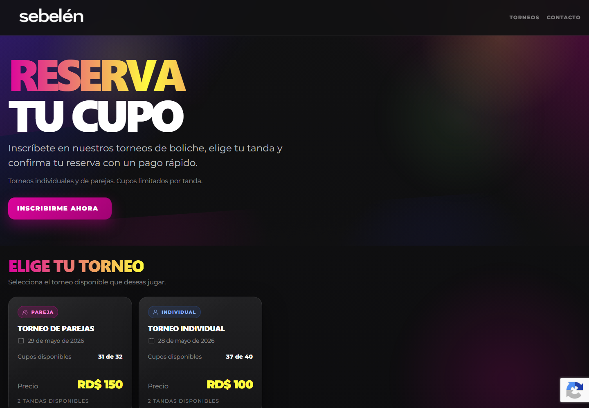

Reservas y pagos
Sebelén Torneos
Un sistema para gestionar cupos, reservas temporales y pagos de torneos de boliche.
Ver caso ↗José Rivas · Santo Domingo, RD
Desarrollo sitios web y sistemas a la medida para negocios que quieren vender, organizarse y operar mejor.
Trabajo seleccionado
Mi trabajo une una interfaz clara con la lógica que el negocio necesita detrás: reservas, pagos, contenido y operación.

Reservas y pagos
Un sistema para gestionar cupos, reservas temporales y pagos de torneos de boliche.
Ver caso ↗Sistema interno
Una herramienta propia para centralizar prospectos, proyectos, tareas y cobros.
Ver caso ↗
Web comercial bilingüe
Una presencia digital pensada para presentar servicios y convertir visitas en consultas.
Ver caso ↗Cómo puedo ayudarte
Páginas comerciales, sitios bilingües y mejoras de webs existentes para explicar lo que haces y generar contactos.
Hablar de una web ↗Herramientas para reservas, pagos, clientes, inventario y tareas que ordenan la operación cotidiana.
Hablar de un sistema ↗APIs, reportes y conexiones entre las herramientas que ya usas para eliminar pasos manuales.
Hablar de automatización ↗Sobre mí
Soy José Manuel Rivas, desarrollador full stack de Santo Domingo. Trabajo con negocios que necesitan una presencia web sólida o una forma más clara de gestionar sus procesos.
Mi proceso empieza escuchando el problema, definiendo un alcance realista y construyendo por etapas para que puedas ver avances y tomar decisiones con confianza.
Contacto
Cuéntame qué quieres mejorar y te responderé para entender el alcance.